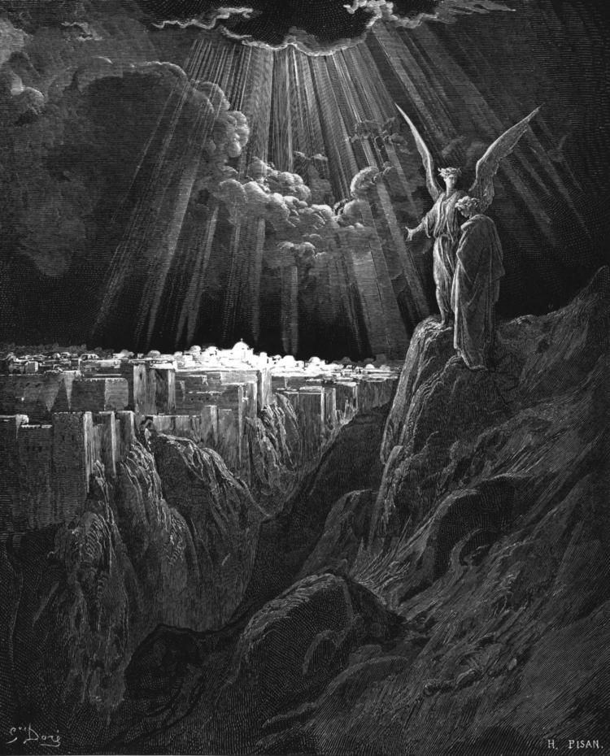

Estudo bíblico · toda segunda-feira · 19h40
Até Apocalipse 22
—dias
00horas
00minutosmin
00segundosseg
Calculando a última segunda-feira…
“Lâmpada para os meus pés é tua palavra, e luz para o meu caminho.”Sl 119:105

Estamos emGênesis 35
Último capítuloApocalipse 22
—Antigo │ Novo Testamento—
—estudos pela frente
—anos de caminhada
—fim do livro atual
—estudos guardados em PDF
—
—
Capítulo a capítuloGênesis
estudadopróximo estudopela frentetem PDF: toque para abrirsem ícone: abre o capítulo na Bíblia
- No Canva, abra a apresentação e vá em Compartilhar → Baixar → PDF padrão. Marque Compactar arquivo: pelo navegador, o GitHub aceita até 25 MB.
- Dê ao arquivo o nome
gn-37.pdf. Se o estudo cobrir mais de um capítulo, use o intervalo, comogn-37-38.pdf. - Toque no botão abaixo, entre na sua conta do GitHub, arraste o PDF para a página e clique em Commit changes.
Em uns três minutos o capítulo acende aqui com o PDF. O GitHub comprime o arquivo e atualiza a lista sozinho.
GaleriaCenas de Gênesis
Gravuras e pinturas clássicas do livro escolhido acima, todas em domínio público.
A Bíblia inteiraOs 66 livros
concluídoestamos aquipela frente
Antigo Testamento39 livros · 929 cap.
Novo Testamento27 livros · 260 cap.

O destino
“Eis que cedo venho. Bem-aventurado aquele que guarda as palavras da profecia deste livro.”Apocalipse 22:7
Uma segunda-feira de cada vez, até o último versículo.
Área do organizadorAtualizar o progresso
As mudanças aqui aparecem só neste aparelho. Para todos verem, baixe o progresso.json e substitua o arquivo dados/progresso.json no GitHub.